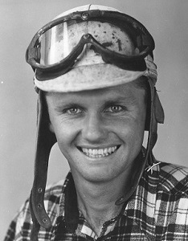
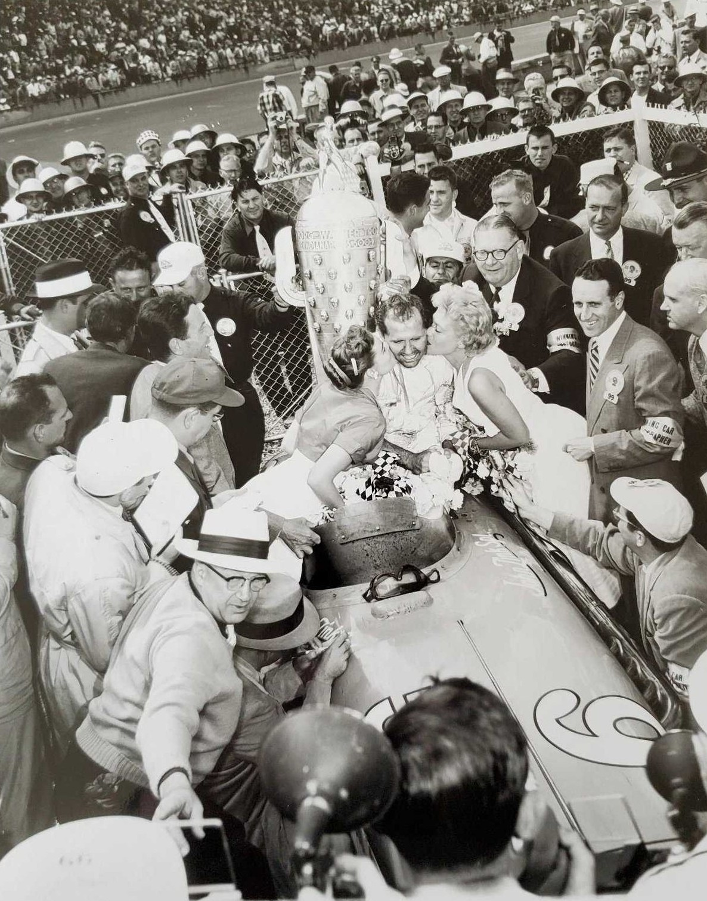
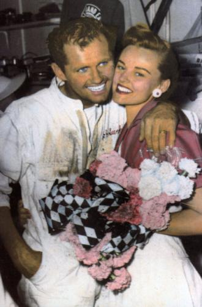

Robert Charles Sweikert was born on May 20, 1926, in Los Angeles (California), the son of Ray and Grace Lake Schweikart, who had migrated from Pittsburgh (Pennsylvania). His parents had divorced before Bob was born, with Grace then marrying Frank Moloney, a Los Angeles Transit System engineer. In 1941, the family moved north to San Francisco, and then to Hayward, a farming community on the east side of the bay.
In 1942, the musically inclined teenager registered at Hayward High School, where he met Delores Schoonover, or "Doll" as he called her. Soon after school, in July of 1944, Sweikert joined the Air Force and was stationed in Colorado. After a knee injury there, he was discharged in September of 1945 and returned to California to marry and have a daughter named Carol. Delores (Dorie) in the meantime, had married a man named Norman Chute and settled in Hayward, where daughter Lynette was born in 1946. The next year Doris and Norman left Hayward and moved to Redding, where son Stephen was born in 1949.
In 1947, Sweikert was a car salesman/mechanic in Hayward when he began racing his home-built roadster against the likes of Bob Veith, Ed Elisian, and others at tracks such as Lodi, Fresno and Oakland. He finished fifth in Northern California Roadster Racing Association (NCRRA) points, and the following year he was declared the NCRRA champion with over twenty feature wins to his credit. The tall, blond-haired, blue-eyed gentleman also won the 1948-49 Bay Cities Racing Association (BCRA) indoor midget title competing at the Oakland Exhibition Building.
The next year he passed his rookie test at Indy (with the following Gordon Betz, AAA California zone supervisor, testimonial: "He's the best prospect to come out of California since Freddie Agabashian"), although he failed to qualify for the big race. He did, however, get a big part in "To Please A Lady", which was being filmed then. Bob Sweikert ended 1950 in seventh place in the AAA Pacific Coast sprint car standings, behind Andy Linden, Cal Niday, Dempsey Wilson, Troy Ruttman, Jack McGrath and "Jiggler Joe" Gemsa. The next year he broke his wrist in a midget accident on the coast and again missed the '500' starting field. During 1951 and '52, with both of their marriages failing, Bob and Dorie remained friends. And in '52 Bob moved his family to Indianapolis, where he qualified for the 500-mile classic aboard the Lee Elkins-owned, Frank Kurtis-built dirt car. He also debuted the Boles Offy sprinter in late autumn at Terre Haute. On January 10, 1953, Bob and Dorie were married in Las Vegas but returned to Indy shortly thereafter. Nine months later, Johnene (in honor of fellow driver Johnny Boyd and car owner John T. Stanko) was born.
Although it was at the high-banked Oakland Stadium where Bob earned his racing credentials, it was on 'the Hills' of the Midwest, Salem (Indiana), Winchester (Indiana), and Dayton (Ohio), where he really grabbed the national spotlight competing with the American Automobile Association (AAA) and, later, the United States Auto Club (USAC).
In 1953, Sweikert competed in Henry Meyer's red Howard & John Iddings-owned Offenhauser-powered sprinter, battling the likes of Pat O'Connor, Mike Nazaruk and Larry Crockett. When it came to running on dirt, Sweikert usually finished ahead of his friendly rival O'Connor, unless the surface hardened like asphalt. With the season more than half over, Bob drove to a one-lap world record at Winchester that stood for nine years. The season finale at Salem came down to a showdown between the two, with O'Connor claiming the win and the AAA Midwestern point championship over Sweikert. But Bob had won twice at Salem, on July 4 and on August 2. He had also won at Cedar Rapids (Iowa) on August 23 and at St. Paul on August 29. Besides a fourteenth at Indy, he won the Hoosier Hundred in 1953 aboard the Dean Van Lines Special.
The next year Sweikert drove one of Lee Elkins' three cars (with LeRoy Warriner and Mike Nazaruk), while O'Connor drove for Hank Lammers. However, after a late season crash with both his teammates, Sweikert came back onto the scene with his own "Bob Sweikert Offy" sprinter. He proceeded to sweep the program at Dayton late in the year with the beautiful machine. Even so, Sweikert finished fifth in 1954 (with two more Salem wins), behind champion O'Connor. His wins in 1954 came at Salem on June 27 and August 8 and at Springfield (Mass.) on September 23- 24.
That winter, sitting around Wally Meskowski's Indianapolis shop, which Sweikert used as his sprint operation headquarters, Bob analyzed his 1954 problem, "It was my stupid mechanic. Just too many mechanical problems!" Bob wasn't afraid to kid himself, referring to either the engineer in him as a 'stupid mechanic' or the driver in him as a 'squirrel'.
Prior to winning the May 30, 1955 Indianapolis 500 aboard John Zink's pink and white roadster (the same race in which Bill Vukovich lost his life), Sweikert added a second sprinter to his team. It was owned by Eph Hoover, although Bob managed its operation. It's driver was 26-year-old newlywed Jerry Hoyt, although he lost his life in the number 7 car at Oklahoma City in July. Those were two tragedies that greatly affected the compassionate Sweikert.
Bob was a true racer, one of the first drivers who flew himself to and from races. According to Bob, "The more you race, the more money you make." One particular weekend, he raced on the hills of Dayton Saturday, made a celebrity appearance at the annual Soap Box Derby in Akron (Ohio) on Sunday morning, then flew by chartered helicopter to Pennsylvania where he raced that afternoon and won!

1955 was a magical year for Bob Sweikert. The win at Indy (the year Jerry Hoyt sat on the pole), combined with crew chief and fellow Californian A.J. Watson's comments lauding Bob's mechanical expertise with the race-winning Offenhauser motor, were truly special. Add to that Bob's championship car wins at Syracuse, DuQuoin (Illinois), Langhorne (Pennsylvania) and Milwaukee, and the prestigious National Championship title over Jimmy Bryan. And then there was his sprint car season, which aptly concluded his "triple crown".
The Midwest season opened April 3 on the Dayton hills. Sweikert ran thirty laps in record time and lapped most of the field. Hoyt was second. With the Speedway looming, the twosome headed to Salem on May 1, where Bob set another thirty-lap record. Unfortunately, on July 11 at Oklahoma City, Jerry was killed while running second to Bob in a heat race on a sun-drenched, rut-filled track. Three days later a solemn Bob Sweikert signed in at Kansas City (Kansas) and won another one... this time for a dear friend.
On August 14 Bob notched a win at Heidelberg (Pennsylvania), and on September 4, DuQuoin was his. That left the finale, Salem's Joe James Memorial, on September 25. Another convincing win in record time for 50 laps. Bob had dethroned friend/rival Pat O'Connor for the AAA Midwestern sprint car championship. He won nine sprint car races in his number five machine, with most of those being on his favorite hills.
The witty and charming Sweikert rocketed into the new year, racing USAC sprint cars at West Palm Beach (Florida.) on February 1 and winning. Following that performance, he finished third in the 12 Hours of Sebring road race in a D-Jaguar. On May 6, he won again at the sprint car race at Dayton. Bob's friends, Johnnie Parsons among them, nagged him to stop racing the high banks. "Bob, those are dangerous hills," Parsons argued. "I wish you wouldn't drive them. If you go out of the ballpark, you've had it... completely.” Sweikert laughed; the hills had been good to him. "John, there's money there. And it's easy for me. That's why I'm racing at Salem this Sunday."

That Father's Day afternoon, June 17, 1956, at his favorite track in Salem, Bob's Watson-built car wasn't handling right. "I'd load her up if it didn't feel right," O'Connor advised him. "I'll get it sorted out," Bob smiled. "You just don't want me to be here, Skinny!"
During the feature, Bob tried retaking his position from Ed Elisian, a long-time rival from their days racing hot rods in the Oakland area. Suddenly, Sweikert's yellow D-A Lubricant number 1 car veered toward the first turn outside crash wall. His car rode the wall for a distance, then flew into the air and out of the track before dropping into the trees. Bob Sweikert was killed. O'Connor sat in his car, wiping the tears from his face.
What had motivated Bob Sweikert? According to his wife Dorie, speaking after his $76,139 Indy win, "But money isn't what makes him race so much. It's the love that keeps him on the move - keeps him pushing to drive more often. I resigned myself to that a long time ago. I'm a race driver's wife and I'm behind him all the way. I would never ask him to cut back or slow down - he wouldn't be Bob Sweikert if he did either one.”
In addition to his sprint car successes, Bob started 38 championship car races during his career, beginning at Indy on May 30, 1952, and he won four (Indy in 1953, Syracuse in '54 and '55, and the Indy 500 in ‘55).